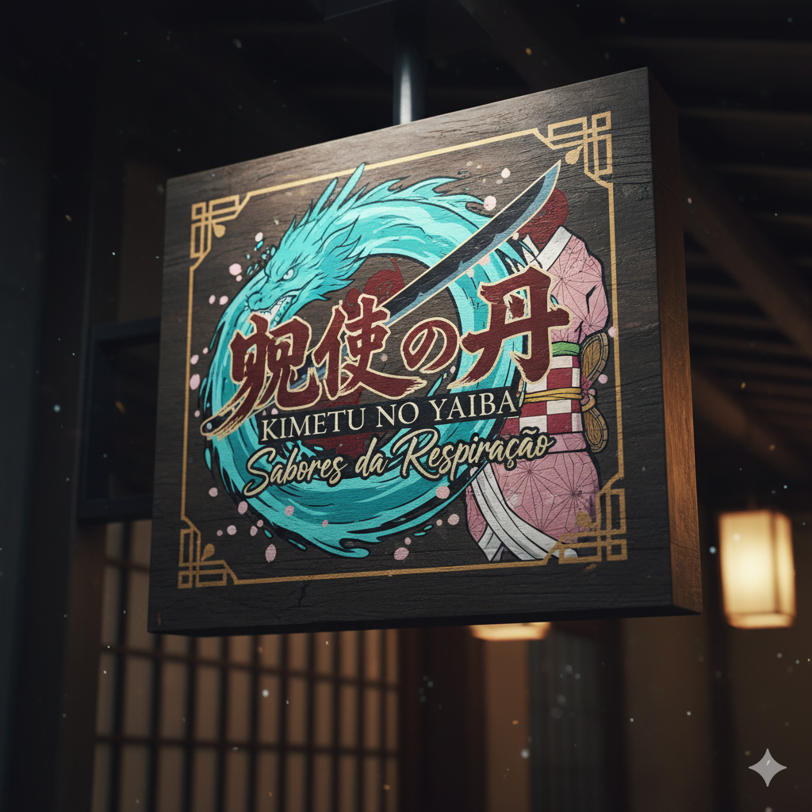

Restaurante Kimetsu no Yaiba - Sabores da Respiração

Em um mundo onde a escuridão da noite é combatida por espadas e determinação, nós trazemos a luz e o sabor. O
Restaurante Kimetsu no Yaiba é uma jornada culinária inspirada na coragem de Tanjiro e seus amigos. Cada prato é
uma forma de arte, uma 'Respiração' de sabores que celebra a tradição japonesa e a épica batalha entre o bem e o
mal. Mergulhe em um ambiente temático e saboreie a essência dos personagens mais amados do anime.
Nosso Diferencial
Ingredientes de Qualidade Superior: Usamos apenas os melhores insumos, como os espadachins usam suas lâminas, garantindo a pureza e a força de cada sabor.
Nosso restaurante é decorado com referências a cenários icônicos, como a Montanha Fujikasane e a Mansão Borboleta, transportando você para dentro do universo de Demon Slayer.
Cada item do nosso menu é uma homenagem única aos personagens e suas técnicas de combate, com apresentações que capturam a essência de suas 'Respirações'.